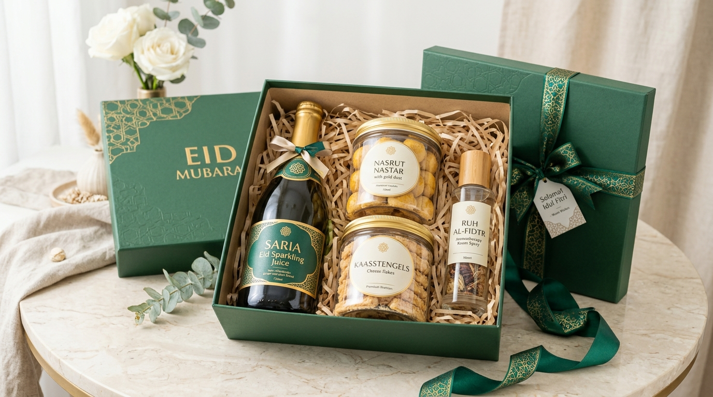

Sebagai kelanjutan dari panduan parcel Lebaran kekinian, artikel ini membedah ragam racikan isi hampers paling dicari, teknik perpaduan produk harmonis, hingga tips menyesuaikan isi dengan anggaran belanja Anda.
Apa Saja Ide Isi Parcel Lebaran Kekinian?
Parcel Lebaran tidak lagi terkungkung pada biskuit kaleng pasar swalayan atau sirup botolan biasa. Bingkisan modern kini menawarkan fleksibilitas yang kaya untuk memadukan sajian kuliner gurih-manis dengan barang-barang nonmakanan yang fungsional dan estetik.
Kunci keberhasilan bingkisan terletak pada kurasi: produk yang dipilih harus memiliki manfaat nyata bagi penerima, memiliki keterikatan tema, serta ditata dengan kemasan yang indah.
1. Ide Isi Parcel dengan Tema Kuliner Premium
Kuliner merupakan bahasa universal perayaan Idulfitri. Namun untuk tampil kekinian, pilihlah produk artisanal dengan kemasan toples kaca bersegel rapi:
- Kue Kering Klasik Mewah: Nastar gulung butter wisman lumer di mulut, kastengel keju edam tua gurih renyah, putri salju kacang mede, dan lidah kucing keju.
- Kombinasi Kurma & Madu Alami: Kurma ajwa Madinah super, madu randu mentah (raw honey), kacang almond panggang, dan sari kurma habbatussauda.
- Artisan Tea & Coffee: Daun teh hijau pucuk jarum, bunga chamomile kering, teh telang biru, serta biji kopi arabika Kintamani dengan aroma buah segar.
Catatan Kurasi: Selalu cek tanggal kedaluwarsa (minimal 6 bulan aman), keutuhan aluminium seal toples, dan sertifikasi halal MUI/BPOM.
2. Apa Isi Parcel Lebaran untuk Keluarga?
Bingkisan keluarga harus dapat dinikmati bersama oleh lintas generasi, dari anak-anak hingga kakek-nenek:
| Konsep Hampers | Rekomendasi Kombinasi Isi Produk |
|---|---|
| Family Celebration | Aneka toples kue kering (nastar, kastengel, semprit), sirup markisa asli, dan kurma premium. |
| Family Kitchen | Set toples bumbu kaca estetik, sendok takar kayu jati, dan teh herbal seduh. |
| Family Dining | Piring saji keramik bermotif islami, mangkuk sup, dan kue kering toples segi delapan. |
| Family Wellness | Madu murni kemasan botol kaca, jahe merah bubuk instan, dan handuk wajah katun higienis. |
| Family Essentials | Minyak goreng kelapa premium, beras organik pandanwangi, dan gula batu kristal. |
3. Apa Isi Hampers Lebaran untuk Sahabat?
Untuk sahabat, sentuhan santai, kreatif, dan personal akan terasa jauh lebih berkesan daripada bingkisan formal:
- Paket Self-Care: Hand cream beraroma mawar, sabun mandi minyak zaitun artisan, scented candle aroma vanila, dan pouch kosmetik kanvas.
- Paket Coffee Lover: Kopi bubuk arabika sachet drip-bag praktis, cangkir enamel vintage atau keramik pastel, dan biskuit cokelat renyah.
- Paket Stationery: Buku jurnal bersampul kain motif batik, pena metal ukir nama, dan pembatas buku magnetik.
- Paket Sweet Treats: Brownies kering toples mini, marshmallow halal, dan cokelat batangan artisan lokal.

4. Ide Isi Parcel Modern dengan Tema Lifestyle
Tema gaya hidup sangat digemari kaum urban karena barang-barangnya terpakai dalam aktivitas harian:
- Untuk Traveler: Sajadah lipat ultralight, penutup mata tidur sutra (silk eye mask), botol minum lipat silikon, dan pouch charger travel.
- Untuk Profesional Kantoran: Smart tumbler LED dengan indikator suhu sentuh, binder kerja kulit sintetis, dan toples camilan kacang pistachio.
- Untuk Pecinta Tanaman: Pot keramik mungil, benih tanaman herbal mint/rosemary, dan gunting pangkas mini.
5. Apa Isi Hampers Home Wellness yang Menarik?
Menciptakan oasis ketenangan di rumah selepas ibadah Ramadan yang panjang:
- Aroma Diffuser: Diffuser ultrasonik elektrik berkapasitas 300ml dengan lampu 7 warna.
- Essential Oils Murni: Ekstrak lavender (meredakan stres), peppermint (menyegarkan pikiran), dan sweet orange (membangkitkan mood).
- Aromatherapy Candle: Lilin berbahan dasar 100% soy wax nabati tanpa asap jelaga berbahaya.
- Natural Bath Salt: Garam mandi epsom dengan kelopak bunga mawar kering untuk relaksasi rendaman kaki.
6. Ide Isi Parcel Perlengkapan Ibadah untuk Lebaran
Memberikan sarana ibadah merupakan sedekah jariyah yang pahalanya terus mengalir:
| Konsep Bingkisan | Kombinasi Produk Ibadah |
|---|---|
| Prayer Essentials | Sajadah tenun turki halus, tasbih kayu gaharu 99 butir, pouch serut bludru. |
| Muslimah Gift | Mukena katun jepang adem dengan renda gyper, sajadah travelling, dan ciput rajut. |
| Muslim Gift | Sarung tenun jacquard motif songket, peci rajut elastis, dan minyak wangi kasturi non-alkohol. |
| Islamic Premium | Mushaf Al-Qur'an tajwid terjemah cover kulit mewah, sajadah beludru tebal, dan tasbih kristal. |
7. Apa Isi Parcel Lebaran untuk Klien dan Perusahaan?
Pengadaan bingkisan kantor (corporate gift) harus mencerminkan kredibilitas institusi pemberi:
Kombinasikan toples kue kering premium berlabel standar industri dengan custom merchandise seperti tumbler termos vakum grafir laser logo kantor, agenda eksekutif, dan kartu ucapan bertandatangan direksi. Koleksi lengkap dapat Anda tinjau pada lini corporate gift Lebaran kami.
8. Bagaimana Mengombinasikan Isi Hampers agar Tidak Berlebihan?
Hindari sindrom memasukkan terlalu banyak jenis barang hingga parcel terlihat penuh sesak tak beraturan:
- Tentukan 1 Hero Product: Jadikan satu produk berukuran paling dominan sebagai pusat perhatian (misal: teko teh keramik atau toples hardbox nastar utama).
- Sediakan 2-3 Produk Pendamping: Lengkapi dengan produk pendukung yang relevan (misal: cangkir teh dan toples madu kecil).
- Sesuaikan Warna Kemasan: Jika produk memiliki warna kemasan beragam, satukan dengan wadah luar dan pita yang berwarna netral (krem, putih, atau navy).
9. Bagaimana Menentukan Isi Parcel Berdasarkan Anggaran?
Berikut panduan alokasi anggaran agar Anda mendapatkan kombinasi paling maksimal:
| Rentang Kategori | Contoh Racikan Isi Hampers |
|---|---|
| Ekonomis (< Rp150.000) | 2 toples kue kering toples 250gr, teh kotak celup, kemasan boks kraft bertali rami. |
| Menengah (Rp150rb – Rp350rb) | 3 toples kue butter wisman, toples madu mini, mug keramik, kemasan hardbox motif. |
| Premium (Rp350rb – Rp750rb) | Kue nastar premium, kurma ajwa, smart tumbler LED, sajadah sutra, rigid box navy gold. |
| Eksklusif (> Rp750.000) | Perlengkapan keramik artisan, essential oil diffuser, madu impor, boks kayu grafir akrilik. |
Rancang estimasi anggaran akurat dengan memilih kemasan dan item favorit Anda di simulasi kalkulator custom parcel.
10. Bagaimana Memilih Vendor Parcel Lebaran yang Tepat?
Memilih vendor terpercaya sangat penting untuk kelancaran pengiriman Lebaran Anda:
- Transparansi Spesifikasi: Menyebutkan gramatur toples, merek bahan, dan dimensi wadah secara jelas.
- Kapasitas Produksi Nyata: Mampu memproduksi ribuan paket dengan kualitas kemasan yang seragam.
- Standar Pengemasan Aman: Menggunakan sekat partisi, bubble wrap tebal, dan outer box kardus berstandar ekspedisi.
Tanya Jawab Seputar Ide Isi Parcel Lebaran Kekinian
Isi parcel Lebaran kekinian meliputi toples kue kering butter wisman, kurma pilihan, madu murni, racikan teh artisan, kopi single origin, tumbler stainless vakum, perlengkapan ibadah premium, produk aroma wellness, dan peralatan makan keramik estetik.
Untuk sahabat terdekat, pilihlah kombinasi produk personal seperti paket seduhan kopi dengan cangkir estetik, produk perawatan diri (hand cream, soy candle), buku agenda, atau toples cookies mini dengan kartu ucapan hangat.
Bingkisan perusahaan sebaiknya berisi kue kering berkualitas tinggi dengan izin resmi BPOM, kurma medjool, tumbler stainless beremboss logo instansi, buku catatan eksekutif, dan kartu ucapan apresiasi kemitraan resmi.
Tentukan satu tema utama, pilih 1 produk utama berukuran besar, lengkapi dengan 2-3 item pelengkap, selaraskan warna kemasan, dan pastikan ukuran wadah pas tanpa rongga kosong berlebihan.
Sama sekali tidak. Semakin banyak orang memilih hampers nonmakanan fungsional seperti set piring keramik, mukena sutra, sajadah travel, aromaterapi diffuser, maupun peralatan minum reusable yang tahan lama digunakan bertahun-tahun.
Tetapkan pagu anggaran per penerima, prioritaskan kualitas produk utama dibandingkan kuantitas yang berlebihan, dan manfaatkan bahan kemasan rapi seperti kotak kraft kokoh yang efisien biaya namun tetap estetik.
Kesimpulan Praktis
Ide isi parcel Lebaran kekinian membuka peluang luas untuk menghadirkan bingkisan yang tidak hanya indah dipandang, tetapi juga sangat bermanfaat bagi kehidupan sehari-hari penerimanya.
Setelah menentukan kombinasi produk impian, langkah krusial berikutnya adalah memastikan seluruh barang tersebut ditata secara presisi agar tidak hancur selama pengiriman ekspedisi. Simak ulasan lengkapnya di panduan tips menata parcel Lebaran agar rapi dan aman dikirim.
Ingin Racikan Isi Parcel Custom Sesuai Budget?
Diskusikan komposisi kue kering, minuman, dan merchandise kantor favorit Anda bersama kurator kami sekarang via WhatsApp.